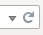

This is a thread to track bugs and bug fixes for the recent update to emoncms.org. Updating the dashboards, visualisations and menu system to Emoncms 9.0 RC2
Note: The underlying data core responsible for inputs, input processing and data storage in feeds have not been changed in this partial update of emoncms.org to v9.0.
Fixed
- Published dashboard menu is now visible
- Widget that where slow to load (taking up to 5s) now loads straight away
- Realtime visualizations, clicking on 1 hour interval now shows data as expected.
- Broken link to documentation removed from Setup menu.
- MyElectric module javascript errors related to configuration
- MyEnergy dashboard link which was pointing to MyElectric
- Timezone selection fixed
Open
- Remove temporary dial name to feedid modification.
- dial widget is not visible from mobile (Android 6 + Google Chrome) - visible on desktop (Win7 + Google Chrome) - EmilianoM
- Touch zoom out too sensitive?
- Inconsistent display of widgets in Chrome - Vster
If you find a bug first check: that the bug remains after a browser cache refresh, which will load the new updated javascript files. The refresh icon on firefox looks like this and is on the right hand side of the address bar:

If in doubt click the page refresh icon!
(until we find a better way to deploy the javascript in emoncms - longer term issue)
Re: Emoncms.org update v9.0 dashboards+
I am not able to set Timezone under 'My account'. An empty box appears with no possibility to choose or edit something.
BR, Jörg.
Re: Emoncms.org update v9.0 dashboards+
Had a quick look and noticed the dropdown Menu Apps 'My Electric' & 'My Solar&Wind' both appear to point to 'My Electric'
Re: Emoncms.org update v9.0 dashboards+
Thanks Bra1n thats now fixed, I've also fixed the configuration variable errors that was resulting in the myelectric dashboard not loading or the spanner icon working.
Re: Emoncms.org update v9.0 dashboards+
Thanks Jorg, thats now fixed
Re: Emoncms.org update v9.0 dashboards+
I have to admit I didn't notice the upgrade to V9 CMS on Chrome either on my desktop or Android Mobile. This is excellent, but....
On Safari (ipad and PC) all the dial widgets in my dashboards on two accounts have lost the dial widgets. I've also found that I cannot add new dial widgets if I try and rebuild the dashboard from scratch. I also notices that the default android browser doesn't work but can see that that is a known issue
I've tried multiple ipads an my PC with Safari and the behaviour is consistent across all of them
I've searched through the forums and cannot find very much that mentions Safari. Has anybody else reported difficulties?
Regards
David
Re: Emoncms.org update v9.0 dashboards+
What version of safari ? Are you seeing error on console?
Re: Emoncms.org update v9.0 dashboards+
Version 9 on the iPads. Apple don't seem to make it easy to debug something on an iPad.
I started to do a systematic test of all the widgets because originally I could only get the feed value one to work and noticed it was the only pure text one. Then, all of a sudden they all started to work OK.
The common element in all this is me, sorry, not sure what I'd done but both of my gauge based dashboards now work on ipad